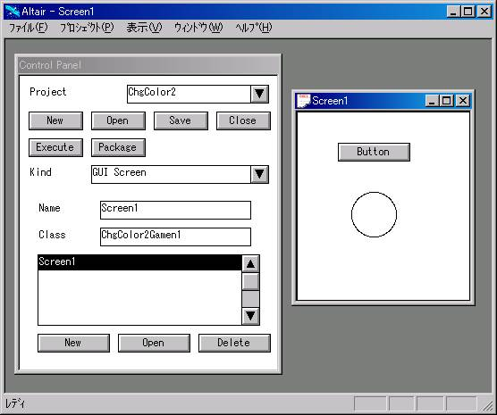

Altairのサンプル
第0.43版 2016年10月23日
第0.00版 1996年 2月11日
● gui/scribble.apr
GUIの基本動作の「描画」と「イベント処理」を理解するための非常に簡単な基本サンプルです。
ウィンドウを作成し、al_set_draw_procで描画関数を登録し、
al_set_event_procでイベント処理関数を登録します。
描画関数は、画面クリアのため領域と、描画領域を表示します。
描画領域でボタンプレスし、ドラッグすると、手書きの曲線が入力され、
クリア領域をクリックすると、書いた曲線をクリアします。
テキスト形式で保存されているライブラリをグラフ形式に変換します。
テキスト形式はサイズが小さいですがロードに非常に時間がかかります。
グラフ形式はサイズがかなり大きいですが、Altairの内部形式に従った
フォーマットでありロードを比較的高速に行うことができます。
Windows版ならgui/gui_sample_setup.batを実行してください。
テキスト形式ライブラリから自動的にグラフ形式のライブラリ
gui/guicore.albとgui/gbgp.albが生成されます。
altair.iniファイル中のLIBDIR,END_LIBDIRで囲まれた部分のパスを
guicore.alb,gbgp.albがあるディレクトリに書き換えてください。
gui_sample_setup.batは、Windows固有のOLE2機能を使用しているため、Linux版では動きません。
Linux版では、以下を行ってください。
- altair.iniファイル中のLIBDIR,END_LIBDIRで囲まれた部分のパスを
guicore.alb,gbgp.albを置くディレクトリに書き換える。
- Altairを起動し、プロジェクトウィンドウの「ファイル」-「開く」で guicore.apr を開く。
- クラスウィンドウのGUIにキャレットを置き、「ライブラリ」-「作成」-「グラフ形式」で、
guicore.alb に保存。
- Altairを再起動し、プロジェクトウィンドウの「ファイル」-「開く」で gbgpt.apr を開く。
- クラスウィンドウのGUIにキャレットを置き、「ライブラリ」-「作成」-「グラフ形式」で、
gbgp.alb に保存。
はじめにプロジェクトウィンドウ上で「ファイル - 開くを」実行し
プロジェクトを開きます。
そうするとクラスウィンドウが現れます
クラスウィンドウのあるクラス上で<ダブルクリックします。
そうするとメンバーウィンドウ上に引数なしのstatic関数がいくつか現れます。
それらの関数上にキャレットを置いて「インタプリタ - （テスト）実行」を
行うとその関数が実行されます。
実行中のウィンドウを閉じるには
システムメニューの「閉じる」を実行してください。
プロジェクトgui/guitest.aprを開いてください。
クラスウィンドウが現れますのでこの中のクラスTP上でダブルクリックしてください。
するとメンバーウィンドウに引数なしのstatic関数がいくつか現れます。
これらがそれぞれサンプルになっています。
いくつかについて説明していきます。
- TP::drag()
-
マルチビューの図形エディタのサンプルです。
図形の入力はできませんが、マウスで図形を編集することができます。
- TP::control_test()
-
ボタン、スクロールバー、リストボックス、コンボボックスのテストです。

- TP::heavy()
-
矩形を200個出しでそれらをドラッグできるというサンプルです。
- TP::label_test()
-
編集可能なラベルのテストです。
ダブルクリックでラベルの内容を変更することができます。
- TP::pict_ed_test()
-
図形エディタのサンプルです。
右ボタンプレスで現れるメニューで一通りの操作ができるようになっています。
- TP::graph_ed_test()
-
グラフ構造エディタのサンプルです。
右ボタンプレスで現れるメニューで一通りの操作ができるようになっています。

- TP::table_ed_test()
-
表エディタのサンプルです。
ダブルクリックでセル編集、罫線ドラッグで行の高さ、列の幅が変えられるように
なっています。
右ボタンプレスで現れるメニューで一通りの操作ができるようになっています。
注: ヒット判定を高速にするための処理が入っているのと、1セル1図形要素に
なっているため、この表の性能は非常に悪いです。
- TP::hier_ed_test()
-
階層構造エディタのサンプルです。
右ボタンプレスで現れるメニューで一通りの操作ができるようになっています。
- TP::text_ed_test()
-
テキストエディタのサンプルです。
右ボタンプレスで現れるメニューで一通りの操作ができるようになっています。
このテキストエディタは入力に必要な最小限の機能しか持っていません。
- TP::dialog_test1()
-
文字列を入力するダイアログのサンプルです。
- TP::dialog_test2()
-
コンボボックスで文字列を選択させるダイアログのサンプルです。
- TP::dialog_test3()
-
複数ボタンのひとつを選択させるダイアログのサンプルです。
- TP::bitmap_test()
-
ビットマップを出すサンプルです。
ダブルクリックで別のビットマップに変えることができます。
圧縮ビットマップは読み込めません。
- TP::button200()
-
ボタンを200個出したサンプルです。
- TP::mdi_test()
-
TP::drag()サンプルを、MDIフレームウィンドウで出すようにしたサンプルです。
- TP::sdi_test()
-
TP::graph_ed_test()サンプルをSDIフレームウィンドウで出すようにしたサンプルです。
- TP::sdi_menu()
-
TP:sdi_test()のメニューをSDIフレームウィンドウのメニューバーにしたサンプルです。
- TP::wnd_msg_test()
-
Windowsのメッセージの送信と受信のサンプルです。
- TP::excel_auto
-
EXCEL OLEオートメーションサーバーを使用するサンプルです。
概略を簡単に説明します。
● 起動、サンプルプロジェクトのオープン
プロジェクトgui/gbgp.aprを開いてください。
クラスGbGpをダブルクリックしてください。
Run()というstatic関数がありますのでここにキャレットを置いて
「インタプリタ - 実行」を行ってください。
コントロールパネルが現れます。
このパネルを使用することでGbGpのプロジェクトの新規作成/オープン/保存
等を行うとともにGbGpの中で使われるGUIビルダ画面/プログラム画面の
制御を行います。
上から2段目の列の左から2番目の「開く」ボタンを
押してcolor2/color2.gbrを開いてください。
これはGbGpのもっとも簡単なサンプルになっています。
● GUIビルダーとそのソース生成
上から3段目のコンボボックスでGUI画面とプログラム画面を切り換える
ことができます。GUI画面を選択してください。
下にリストボックスが現れ「画面１」という項目がリストボックス中にひとつ現れます。
このcolor1/color2プロジェクトでは「画面１」というウィンドウを一つだけを
使っていることを意味します。
次にリストボックス上の「画面１」を選択し、
最下段の「開く」ボタンを押してください。
GUIビルダ画面が現れます。このGUIビルダ画面はボタン一つと
図形一つを配置しただけの非常に簡単なものです。
ボタンにはbutton1、図形にはcircle1という名前が付いています。
この画面上で右ボタンプレスすればメニューが出てきますので
その他のいろいろな部品を配置することができますし、
この画面上でいろいろなプロパティを設定することができます。
ソース生成というメニュー項目で画面を作成するソースの生成が行われます。

● 結線プログラミング、クラス定義画面
次にプログラム画面の方にいきましょう。
コントロールパネルのコンボボックスでプログラム画面を選択してください。
今度は「プログラム１」という項目の入ったリストボックスが現れます。
さきほどと同じように「プログラム１」を選択し、
最下段にある「開く」ボタンを押してください。
そうするとクラス階層図のサブセットが現れます。
このウィンドウで新たなクラスの定義ができます。
ChgColor1App/ChgColor2Appというクラスは新たに定義したクラスです。
ChgColor1Gamen1/ChgColor2Gamen1というクラスは画面作成でできたクラスです。
● 結線プログラミング、メソッドインターフェース定義画面
ChgColor1App/ChgColor2Appというクラスを表わすノードをダブルクリックしてください。
ポートのついたノードがひとつ現れます。
このノードはChgColor1App/ChgColor2Appという
クラスにmainというメンバー関数が定義されていることを意味します。
● 結線プログラミング、メソッド実装画面(メイン)
mainというノードをダブルクリックしてください。
プログラムを２次元的に表わした画面が現れます。
この画面で丸はオブジェクト、ポートのついたノードはメンバー関数、
実線はデータの流れ、点線はコントロールの流れです。
この例では画面に相当するオブジェクトを作成し、
button1にChgColor1Gamen1::callback/ChgColor2Gamen1::callbackを
コールバック関数として設定しています。
● 結線プログラミング、メソッド実装画面(コールバック)
少し戻って、ChgColor1Gamen1/ChgColor2Gamen1というクラスを表すノードを
ダブルクリックしてください。
callbackという名前のついたノードが現れます。
callbackというノードをダブルクリックしてください。
callback関数の中身を表すプログラム画面が現れます。
この例では、circle1のfill_colorの値を反転させて
その値を再度fill_colorに設定し再表示をかけています。
以上の説明でわかると思いますが、このプログラムは、
ボタンが押されると図形の色が反転するというものです。
● 結線プログラミングとそのソース生成
ノード間を結線して作成したプログラムは、Altairのコードに落とされます。
ソース生成するためには、mainやcallbackのノードを選択し、
「ソース生成」を実行します。
ソース生成された関数を実行する場合は、
この例ではmainを選択し「実行に使用」を実行して、
コントロールパネルの実行ボタンを押します。
● 結線プログラミング、記述ではなく選択、ユーザ定義クラスの追加
結線プログラム時に、クラスやメンバー関数を入力しなければなりませんが
GbGpでは、クラスや関数の選択にコンボボックスを用いることにしていて、
キーボードから直に入力させることは原則していません。
このためにはどのクラスが公開クラスでどのメンバーが
公開メンバーかを宣言しておく必要がありますが、GbGpでは、
GbGpPanel::CreateClassList()の中に_Append("クラス名");を書くだけで
クラスが公開され、各クラス::public_var()、各クラス::public_func()に
メンバー変数/メンバー関数を書いておくだけでメンバーが公開されます。
● GUIビルダー、アタッチメント、GUI画面のネスト
GbGpサンプルは、GUI画面でのアタッチメントの機能と
GUI画面をサブGUI画面として他のGUI画面に貼り付ける機能を持っています。
gbgp/nestgui/nestgui.gprがこの例になっています。
nestguiサンプルは表を含んでいますが、スクロールがすごく遅いです。
これは表のセルひとつひとつが図形のラベルで構成されているからです。実用に足る
表を使おうと思ったら図形要素の数の少ない表にするか、表のOCXを使うことが考えられます。
● GUIビルダー、ユーザ定義部品の配置
GbGpでは、ユーザが定義した部品をGUIビルダーに登録し配置することができます。
gbgp/othello/othello.gprがこのサンプルになっています。
(このサンプルはオセロゲームとして楽しむことができますが、
あまり強くありません。)
オセロ盤がユーザ定義部品になっています。
このサンプルでは大まかな流れだけを結線プログラミングで行っていて細かいところは
スクリプトでプログラムしています。
結線プログラミングは細かいところの記述には向いていませんが、
大まかな流れを表現するのには向いていると思われます。
注: このGbGpというサンプルはとりあえず必要な関数しか公開していません。
GbGpでまともなアプリケーションを作成しようと思ったら、
クラスライブラリの方に関数を追加してそれをGbGp上に公開したり、
新たなクラスを作成してそれをGbGp上に公開する必要があります。
注: このサンプルはタブ遷移をサポートしていません。
また、文字列の入力はすべてダブルクリックから始まります。
これらはベースにしているGUIクラスライブラリの実装からくる制限です。
ここにあげる並列処理のサンプルでは、
プロセス間の通信にChannelというクラスのオブジェクトを使っています。
ChannelはUNIXのパイプ/Occamのchannelとほぼ同じものです。FIFOのバッファです。
Channelをプロセス間で共有し、片方のプロセスがChannelに書き込んで
もう片方のプロセスがChannelから読み込むという形です。
プロジェクトgui/guitest.aprを開いてください。
クラスTPをダブルクリックしてください。
関数FactMainが階乗計算のメインプログラム、
Factorialが再帰呼び出しを並列処理で表わした部分になっています。
プロジェクトgui/guitest.aprを開いてください。
クラスTPをダブルクリックしてください。
関数PNumMainが素数を得るメインプログラム、
Integersは数列を発生する部分、
ShiftAndFilterが数列をエラトステネスのふるいにかける部分になっています。
サンプルGbGpはOCXのコンテナになっています。
GUIビルダーで「配置-OCX」を選択するとOCXの一覧が出てきます。
適当なOCXを選択してGUIビルダー上でクリックするとそこにOCXが
配置されます。
マウスで移動/リサイズすることができます。
ダブルクリックするとOCXが持っているプロパティエディタが
立ち上がりプロパティを設定することができます。
設定したプロパティはプロジェクトの保存をすると保存され、
実行のときに保存されたプロパティがロードされるようになっています。
OLEオートメーションはOcxGlyph::object()で返るvariant型の
オブジェクトを介して行います。
プロパティのセット/ゲット、メソッド呼び出しが可能です。
イベントコールバックを設定することができ、
もちろんイベント引数も使えるようになっています。
- gbgp/treeview/treeview.gpr
-
TreeViewコントロールのサンプルです。
- gbgp/htmlview/htmlview.gpr
-
IE3.0以上についているWebブラウザコントロールのサンプルです。
- mmedia/mmedia.gpr
-
私が提供しているAlMMコントロール(マルチメディアOLEコントロール)のサンプルです。

build/1/build.apr
C/C++のソースファイルからexeを作成するサンプルです。
ビルドを行うためにはMS VC++が必要です。
build/2/build.apr
上記build/1/build.aprはプリコンパイル済みヘッダを使っていませんが
これはプリコンパイル済みヘッダを使うようにしたものです。
comm/stdio.apr, comm/stdio2.apr
Altair.exeからAltair.exeを起動し、その間を標準入出力のパイプでつなぎ、
EXE間でパイプにより通信を行うサンプルです。
stdio.aprの親プロセスでは、Altairの並列処理機能を使っています。
comm/mapfile.apr (Windows版のみ)
Altair.exeからAltair.exeを起動し、その間でメモリマップトファイル(共有メモリ)を
介してデータを送受信するサンプルです。
comm/mapfile2.apr (WindowsおよびLinux版)
共有メモリを介してデータを受け渡すサンプルです。
Altairの以下のWindows/Linux非互換APIを使います。
al_wnd_message(... "create_map" ...),
al_wnd_message(... "get_map" ...),
al_wnd_message(... "close_map" ...)
comm/script.apr
al_script関数を使ったサンプルです。
bank/orbt.apr
メモリマッピングオブジェクトとウィンドウメッセージを使って
プロセス間でリモートプロシージャコールを行うサンプルです。
メモリマッピングオブジェクトとウィンドウメッセージの部分を
Socketを使ったものに書き換え、ネーミングサーバを用意すれば
CORBAやJava−RMIと同等のことができるようになります。
詳細
gbgp/javaide/javaide.gpr
Javaの簡易IDEです。
プロジェクト管理、クラスブラウザ、ビルド、jdbをラップしたデバッガが使用できます。
プロジェクトファイルのファイルフォーマットはXML形式のファイルを使用しています。
ビルドはpackage分を抽出しパッケージに相当したディレクトリを自動的に掘ります。
デバッガでは、簡単なパーサによってクラス名を抽出しています。
JDKのソースにステップインすることが可能です。
テキストエディタは秀丸等のエディタを使用することができます。
GnuのRCSを使用してソースの版管理ができます。
Javaとの連携ではおもに標準入出力をパイプにつないで行っています。
シェアウェアのテキストエディタの秀丸は、
窓の杜の
「ソフトライブラリ」-「エディタ」から
入手できます。
フリーウェアのGnuのRCSは、
Cyclic Software
等から入手できます。
詳細
● xml/xml.apr
- TP::parse_and_generate_xml
-
XML形式ファイルを読み込んでパースツリーを作成し、
そのパースツリーからXML形式ファイルを生成しそれをnotepadで
表示するサンプルです。
- TP::parse_with_debug_outout
-
XML形式ファイルを読み込んでパースツリーを作成するとき
途中結果をアウトプットウィンドウに出力しながらパーズするサンプルです。
- TP::parse_without_parse_tree_generation
-
パースツリーを作成せず、各構成要素を読み込む度に、
読み込んだ構成要素をリスナーのメソッドを呼ぶこと通知するサンプルです。
● comm/socket.apr
TCP/IP,UDPプロトコルの通信機能のもっとも簡単なテストサンプルです。
TP::tcp_server()でTCP/IPのサーバが動き、
別のプロセスでTP::tcp_client()を動かすとTCP/IPのクライアントが動き、
クライアントからサーバへ"hello!"というメッセージが送られます。
TP::udp_server()でUDPのサーバが動き、
別のプロセスでTP::udp_client()を動かすとUDPのクライアントが動き、
クライアントからサーバへ"hello!"というメッセージが送られます。
注意:
実際に動かす場合は、TP::init_client()中のhostnameという変数に
実際にサーバを動かすマシン名を入れてください。
● comm/socket2.apr
socket.aprでは、accept/recv/recvfromでaccept/recv/recvfromされるまで
制御が戻らないものを使っています。
このため、accept/recv/recvfromでAPが凍ってしまいます。
socket2.aprはaccept/recv/recvfromを別スレッドで行い、
accept/recv/recvfromされたらウィンドウメッセージで通知するものに
socket.aprを変えたものです。
このようにすればaccept/recv/recvfromでAPが凍ることはなくなります。
使い方はsocket.aprと同様です。
● comm/simple_ft.apr
accept_queue/send_queue/recv_queueを用い、
TCP/IPプロトコルでファイル転送を行うテストサンプルです。
TP::server()でファイル転送のサーバが動きます。
TP::client()でファイル転送のクライアントが動きます。
TP::put_file()でクライアントからサーバへファイルのPut、
TP::get_file()でクライアントへサーバからファイルのGet、
TP::cancel()でファイル転送のキャンセルができます。
注意:
実際に動かす場合は、TP::client()中のhostnameという変数に
実際にサーバを動かすマシン名を入れてください。
また、TP::file_put()中のlocalという変数に
クライアントを動かすマシンに実際に存在するするファイルのパスを、
remoteという変数にサーバを動かすマシンに作成できるファイルのパスを
入れてください。
また、TP::file_get()中のremoteという変数に
サーバを動かすマシンに実際に存在するするファイルのパスを、
localという変数にクライアントを動かすマシンに作成できるファイルのパスを
入れてください。
● comm/dllcall.apr
DLL/シェアドライブラリのネイティブ関数コールをするサンプルです。
Windows版では、
kernel32.dllの中の Beep、および
kernel32.dllの中の GetWindowsDirecotry 、および
user32.dllの中の MessageBox(MessageBoxA) という関数の
ネイティブコールをします。
Linux版では、
libglib.soの中の g_get_current_directory, g_print, g_free、および
libm.soの中の atan という関数の
ネイティブコールをします。
● net/http/httpd.apr
簡易HTTPサーバです。
Windowsマシンを個人用HTTPサーバにすることができます。
text/plan, text/html, image/gif, image/jpegに対応しています。
wwwrootのディレクトリ設定は、HttpServer::Create()中の
wwwrootという変数への代入文を書き換えてください。
起動は、HttpServer::start()を実行すると起動します。
HttpServer::stop()を実行すると終了します。
ActivePerlと組み合わせることにより、それがサポートしている範囲で
CGIの動作確認を使うことができます。
フリーウェアのActivePerlは
ActiveState
から入手できます。
● net/http/httpclnt.apr
簡単なHTTPクライアントです。
PerformHTTPClient::main();を実行すると、指定されたURLについて
3回ずつGETを行い、レスポンスが何ミリ秒だったかを出力します。
URLの指定は、PerformHTTPClient::SetURLs();で行っています。
● net/smtp/mail.apr
SMTPクライアントです。
コマンドラインからテキストのメールを送ることができます。
使い方:
> altair [ -dir <main.aprのディレクトリ> ] -file main.apr -class STMPClient -method send\
server <stmp-servername> from <from-address>\
[to <to-address>]* [cc <cc-address>]* subject <subject>\
text <text-filename> [error <error-output-filename>]
<stmp-servername> SMTPのサーバの名前
<from-address> 送信者のメールアドレス（必須）
<to-address> Toのあて先のメールアドレス（複数可）
<cc-address> Ccのあて先のメールアドレス（複数可）
<subject> サブジェクト（「"」でくくった文字列）
<text-filename> 送付する内容の入ったテキスト（「"」でくくったファイル名）
<error-output-filename> エラー出力先（「"」でくくったファイル名、省略可）
終了コードは、送信に成功すると0、送信に失敗しすると1。
● net/crypt/crypt.apr
暗号化/認証の基本機能テストサンプルです。
- TP::generate_nrsa_keypair()
-
RSAベースの公開鍵と秘密鍵のペアを生成します。
- TP::encrypt_by_nrsa_public_key()
-
平文のファイルから公開鍵で暗号化したファイルを作成します。
- TP::decrypt_by_nrsa_secret_key()
-
暗号化したファイルから秘密鍵で復号化したファイルを作成します。
- TP::encrypt_by_nrsa_secret_key()
-
平文のファイルから秘密鍵で暗号化したファイルを作成します。
- TP::decrypt_by_nrsa_public_key()
-
暗号化したファイルから公開鍵で復号化したファイルを作成します。
- TP::generate_common_key()
-
共通鍵を生成します。
- TP::encrypt_by_common_key()
-
平文のファイルから共通鍵で暗号化したファイルを作成します。
- TP::decrypt_by_common_key()
-
暗号化したファイルから共通鍵で復号化したファイルを作成します。
- TP::print_md5_digest()
-
ファイル内容の"MD5"のメッセージダイジェストを出力します。
- TP::print_sha1_digest()
-
ファイル内容の"SHA-1"のメッセージダイジェストを出力します。
● rdb/sqltest.apr
DBアクセスの基本機能テストサンプルです。
- SQLTest::test_create_table()/SQLTest2::test_create_table()
-
テーブルを作成します。
- SQLTest::test_drop_table()/SQLTest2::test_drop_table()
-
テーブルを削除します。
- SQLTest::test_insert()
-
テーブルに整数、文字列、実数のレコードを挿入します。
- SQLTest::test_select()
-
テーブルから整数、文字列、実数のレコードを検索します。
- SQLTest2::test_insert()
-
テーブルに現在の日付、バイナリデータ(read.gif)のレコードを挿入します。
- SQLTest2::test_select()
-
テーブルから日付、バイナリデータのレコードを検索し、
バイナリデータはwrite.gifに書き込みます。
Windows版では、SQLTest/SQLTest2のconnect()内で、
db_name,user,passwdという変数に代入しているところを
実際の環境のODBCの、データソース名、ユーザ名、パスワードに
変えてください。
● rdb/db2csv.apr
DBテーブルの内容をCSVファイルにダンプするサンプルです。
● rdb/csv2db.apr
CSVファイルの内容をDBテーブルにストアするサンプルです。
● net/https/httpd.apr
簡易HTTPSサーバです。
簡易HTTPサーバのサーバソケットをSSLのソケットに置き換え、
ポート番号を80から443にしたものです。
以下のファイルを使います。
server/cert.pem サーバの公開鍵証明書
server/private/key.pem サーバの秘密鍵
dh/param.pem Diffie-Hellmanパラメータ
● net/https/httpclnt.apr
簡単なHTTPSクライアントです。
簡単なHTTPクライアントのクライアントソケットをSSLのソケットに置き換え、
ポート番号を80から443にしたものです。
Webブラウザからhttps://で始まるURLを入力すると、デモCAを受け入れるか聞いてきて
受け入れるにすると、WebブラウザにSSL通信で取得したものが表示されます。
● net/https/httpclnt_serverAuth.apr
httpclnt.aprをサーバ認証するようにしたものです。
● net/https/httpd_clientAuth.apr, net/https/httpclnt_clientAuth.apr
httpd.apr, httpclnt.aprをクライアント認証するようにしたものです。
● net/https/httpclnt_bothAuth.apr
httpclnt.aprをサーバ認証とクライアント認証をするようにしたものです。
● net/https/cert.bat, ca.conf, client.conf, server.conf
OpenSSLのコマンド openssl を使って、デモCAと
サーバの鍵ペアと、デモCAが署名したサーバの公開鍵証明書と
クライアントの鍵ペアと、デモCAが署名したクライアントの公開鍵証明書を
作成します。
ca.confはデモCAを作るときの設定ファイル、
server.confはサーバの鍵ペアを作るときの設定ファイルです。
client.confはクライアントの鍵ペアを作るときの設定ファイルです。
バッチを実行すると主に以下のファイルができます。
dh/param.pem Diffie-Hellmanパラメータ
ca/cert.pem 自分で署名したデモCAの公開鍵証明書
ca/private/key.pem デモCAの秘密鍵
server/cert.pem デモCAが署名したサーバの公開鍵証明書
server/private/key.pem サーバの秘密鍵
client/cert.pem デモCAが署名したクライアントの公開鍵証明書
client/private/key.pem クライアントの秘密鍵
● net/https/httpd128.apr
128bit以上の暗号しか許さない簡単なHTTPSクライアントです。
128bitの暗号強度のブラウザならブラウズできますが、
56bitの暗号強度のブラウザならブラウズができません。
● net/smime/smime.apr
OpenSSLを使った SMIME 暗号/署名サンプルです。
- SMIME::smime_encrypt()
-
SMIMEで暗号化を行います。
- SMIME::smime_decrypt()
-
SMIMEで復号化を行います。
- SMIME::smime_sign()
-
SMIMEで署名を行います。
- SMIME::smime_verify()
-
SMIMEで署名検証を行います。
- SMIME::mime_multipart()
-
MIME Multipartの分解と組み立てを行います。
- SMIME:base64_encode:()
-
base64のエンコードを行います。
- SMIME:base64_decode:()
-
base64のデコードを行います。
● net/smime/cert.bat, ca.conf, server.conf
OpenSSLのコマンド openssl を使って、デモCAと
サーバの鍵ペアと、デモCAが署名したサーバの公開鍵証明書を作成します。
バッチを実行すると主に以下のファイルができます。
ca/cert.pem 自分で署名したデモCAの公開鍵証明書
ca/private/key.pem デモCAの秘密鍵
server/cert.pem デモCAが署名したサーバの公開鍵証明書
server/private/key.pem サーバの秘密鍵
● prof/prof.apr
プロファイラの使い方をのサンプルです。
これの結果を性能についてに載せています。
比較に使ったJavaプログラムなどもいっしょにあります。
● net/servlet/servlet.apr
簡易サーブレットエンジンとその簡易HTTPサーバとサーブレットのサンプルです。
net/servlet/config.xmlが設定ファイルになっています。
３つのHTMLファイルとHttpServletクラスの派生クラスとして２つのServletを定義しています。
TestServlet1 doGetで「Hello World」と表示するサーブレット
TestServlet2 Sessionを必要とするサンプル
sessionがないと no_session.html へリダイレクト
login.html からのポストでsession作成
セッションが有効な間、氏名と電話番号の組をInsert/Update/Deleteしたり、
その一覧を表示する。
このサンプルのServletエンジンのSession管理は、URLではなくCookieを使っています。
● xml/xml.apr
簡易XSLTプロセッサでXMLデータをXSLを使って変換するサンプルを含みます。
- TP::xslt_transform_1
-
test.xmlをtest1.xslで変換したXMLをアウトプットウィンドウに出力。
- TP::xslt_transform_2
-
test.xmlをtest2.xslで変換したXMLをアウトプットウィンドウに出力。
- TP::xslt_transform_3
-
test.xmlをtest3.xslで変換したXMLをアウトプットウィンドウに出力。
- TP::xslt_transform_4
-
test.xmlをtest4.xslで変換したXMLをアウトプットウィンドウに出力。
- TP::xslt_transform_5
-
test.xmlをtest5.xslで変換したXMLをアウトプットウィンドウに出力。
- TP::xslt_transform_6
-
test.xmlをtest6.xslで変換したXMLをアウトプットウィンドウに出力。
- TP::xslt_transform_7
-
test.xmlをtest7.xslで変換したXMLをアウトプットウィンドウに出力。
- TP::xslt_transform_8
-
test.xmlをtest8.xslで変換したXMLをアウトプットウィンドウに出力。
- TP::xslt_transform_9
-
test.xmlをtest9.xslで変換したXMLをアウトプットウィンドウに出力。
● solid/solid1.apr
立方体、円柱、円錐、球を表示。
● solid/solid2.apr
２つの立方体の和（Union）、差（Minus）、積（Intersection）を表示。
簡易APサーバに財務会計ソフトをつけました。
経理の簡易帳簿でない複式帳簿をつけることができます。
Webブラウザから、伝票入力、決算書作成などができます。
RDBを使っていますが、内部的にはほとんどすべてXMLベースの処理で
XmlUtilityを使っていて、SQL文を直に使っているところはありません。
Web画面の生成にはXSLを多用しています。
簡単な説明
簡易APサーバに、財務会計ソフトと連動した、
簡易Webショッピングシステムサンプルをつけました。
やはり、RDBを使っていますが、内部的にはほとんどすべてXMLベースの処理で
XmlUtilityを使っていて、SQL文を直に使っているところはありません。
Web画面の生成にはXSLを多用しています。
このWebシッピングサイトサンプルは、実用を考えてというよりも、
アプリケーションの作り方を研究するためにとりあえず作ったものです。
この研究は、
煩わしいところはどこか、自動生成が可能なところはどこか、
アプリケーションロジックの本質を表す必要最小限の情報は何か、
その情報を元にアプリケーションを完全自動生成できるか、
などを分析することです。
簡単な説明
XMLメッセージを扱う簡易APサーバのサンプルです。
この上にRosettaNetのRNIF2.0と代表的なPIPの実装を行っている簡易RosettaNetサーバでもあります。
以下の特徴があります。
-
DTDさえあれば、業務APの下位のXMLメッセージの格納と取り出しを行う部分の
プログラムの作成が不要。
-
業務フローの実行管理を行うシンプルなプロセスエンジンを提供。
-
ランタイム時にサーバを動かしながら、画面のカスタマイズ
(表の項目に何を表示するかの指定、表の項目の表示する順番の変更)が可能な
メタWebUIを提供。
詳細
● gbgp/xmp_mapper/xml_mapper.gpr
２つのDTDを読み込んで、GUI上に表示し、
矢印を引いてタグの値の対応関係情報を作成するマッパーのサンプルです。
対応関係情報は、以下のようなCSV形式ファイルで生成されます。
● nl/juman_knp.apr
JUMAN/KNPの日本語自然言語処理のサンプルです。
（辞書の設定を行ってから実行して下さい。）
- JUMAN_KNP::juman
-
例文 text.txt 形態素解析した結果を text-juman.txt に出力。
- JUMAN_KNP::knp
-
形態素解析した結果 text-juman.txt を構文解析した結果を text-knp.txt に出力。
● parser_and_generator/math-simple.apr
文法 math-syntax.txt をコンパイルし、
その文法に従って math-input.txt のパースツリーを作成し、
その文法とそのパースツリーから 同じパースツリーが生成されるテキストを
math-output.txt に出力します。
● parser_and_generator/xml-simple.apr
文法 xml-syntax.txt をコンパイルし、
その文法に従って xml-input.txt のパースツリーを作成し、
その文法とそのパースツリーから 同じパースツリーが生成されるテキストを
xml-output.txt に出力します。
● prolog/prolog.apr がPrologプログラムを実行させるサンプルです。
ファイル system.syntax でPrologの文法を定義しています。
Prologのサンプルは以下です。
prolog_test_01.prolog リストのappendを行なう。
prolog_test_02.prolog append結果のリストになるappend元の引数の組をすべて求める。
prolog_test_10.prolog 3人の宣教師と3人の土人が2人乗りのボートだけで
宣教師が土人に食べられないようにして向こう岸に渡すすべての解を求める。
prolog_test_11.prolog ハノイの塔。
prolog_test_12.prolog ８クィーン。
● almath/almath.apr が数式処理システムを実行させるサンプルです。
次の画面は入出力例です。
１番目はシュワルツシルド空間の極座標での接続係数を求めています。
２、３番目は多変数多項式の割り算を行っています。
シュワルツシルド空間の接続係数の計算の入力ファイルは以下です。